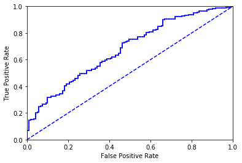

在分类问题中，boosting通过改变训练样本的权重，学习多个分类器，并将这些分类器进行线性组合来提高分类的性能
如何将弱学习算法提升成强学习算法，AdaBoost是个不错的算法，它通过改变训练数据的概率分布（权值分布），针对不同的训练数据分布调用弱学习算法学习一系列弱分类器
那么就有两个问题：
第一个问题，AdaBoost提高那些前一轮弱分类器分类错误的样本的权值，降低分类正确样本的权值。
第二个问题，AdaBoost采用加权多数表决法，加大分类误差率小的弱分类器的权值，减小分类误差率大的弱分类器的权值
AdaBoost是前向分步算法的特例，这时模型是由基本分类器组成的加法模型，损失函数是指数函数
提升树
以决策树为基函数的提升方法叫提升树(boosting tree)
基于单层决策树构建弱分类器
import numpy as np#先构建一个简单的数据集以确保实现
def loadSimpleData():
dataMat = np.matrix([[1, 2.1],
[2, 1.1],
[1.3, 1],
[1 , 1],
[2 , 1]])
labels = [1, 1, -1, -1, 1]
return dataMat, labelsdataMat, labels = loadSimpleData()import matplotlib.pyplot as pltxcoord0 = []
ycoord0 = []
xcoord1 = []
ycoord1 = []
for i in range(5):
if (labels[i] == -1):
xcoord0.append(dataMat[i,0])
ycoord0.append(dataMat[i,1])
else:
xcoord1.append(dataMat[i,0])
ycoord1.append(dataMat[i,1])fig = plt.figure()
ax = plt.subplot(111)
ax.scatter(xcoord0, ycoord0, marker='s', s=90)
ax.scatter(xcoord1, ycoord1, marker='o', s=50, c='red')
plt.show()
#t通过阈值比较对数据分类
def stumpClassify(dataMat, dimen, threshVal, threshIneq):
retArray = np.ones((np.shape(dataMat)[0],1))
if (threshIneq == 'lt'):
retArray[dataMat[:, dimen] <= threshVal] = -1
else:
retArray[dataMat[:, dimen] > threshVal] = 1
return retArray#构建决策树桩
def buildStump(dataMat, labels, D):
dataMatrix = np.mat(dataMat)
labelsMatrix = np.mat(labels).T
m,n = np.shape(dataMatrix)
numSteps = 10 #将范围分割成10份
bestStump = {}
bestClassEst = np.mat(np.zeros((m,1)))
minError = np.inf
#在数据集所有特征上遍历
for i in range(n):
rangeMin = dataMatrix[:, i].min()
rangeMax = dataMatrix[:, i].max()
stepSize = (rangeMax - rangeMin)/numSteps
for j in range(-1, numSteps+1):
for inequal in ['lt', 'gt']: #less than, great than
threshVal = (rangeMin + j * stepSize)
predictedVals = stumpClassify(dataMatrix, i, threshVal, inequal)
# print(predictedVals)
errArr = np.mat(np.ones((m,1)))
# print(errArr)
errArr[predictedVals == labelsMatrix] = 0
weightedError = D.T * errArr
# print('split: dim %d, thresh %.2f, thresh inequal: %s, the weighted error is %.3f' \
# % (i, threshVal, inequal, weightedError))
if weightedError < minError:
minError = weightedError
bestClassEst = predictedVals.copy()
bestStump['dim'] = i
bestStump['thresh'] = threshVal
bestStump['ineq'] = inequal
return bestStump, minError, bestClassEstD = np.mat(np.ones((5,1))/5)
buildStump(dataMat, labels, D)split: dim 0, thresh 0.90, thresh inequal: lt, the weighted error is 0.400
split: dim 0, thresh 0.90, thresh inequal: gt, the weighted error is 0.400
split: dim 0, thresh 1.00, thresh inequal: lt, the weighted error is 0.400
split: dim 0, thresh 1.00, thresh inequal: gt, the weighted error is 0.400
split: dim 0, thresh 1.10, thresh inequal: lt, the weighted error is 0.400
split: dim 0, thresh 1.10, thresh inequal: gt, the weighted error is 0.400
split: dim 0, thresh 1.20, thresh inequal: lt, the weighted error is 0.400
split: dim 0, thresh 1.20, thresh inequal: gt, the weighted error is 0.400
split: dim 0, thresh 1.30, thresh inequal: lt, the weighted error is 0.200
split: dim 0, thresh 1.30, thresh inequal: gt, the weighted error is 0.400
split: dim 0, thresh 1.40, thresh inequal: lt, the weighted error is 0.200
split: dim 0, thresh 1.40, thresh inequal: gt, the weighted error is 0.400
split: dim 0, thresh 1.50, thresh inequal: lt, the weighted error is 0.200
split: dim 0, thresh 1.50, thresh inequal: gt, the weighted error is 0.400
split: dim 0, thresh 1.60, thresh inequal: lt, the weighted error is 0.200
split: dim 0, thresh 1.60, thresh inequal: gt, the weighted error is 0.400
split: dim 0, thresh 1.70, thresh inequal: lt, the weighted error is 0.200
split: dim 0, thresh 1.70, thresh inequal: gt, the weighted error is 0.400
split: dim 0, thresh 1.80, thresh inequal: lt, the weighted error is 0.200
split: dim 0, thresh 1.80, thresh inequal: gt, the weighted error is 0.400
split: dim 0, thresh 1.90, thresh inequal: lt, the weighted error is 0.200
split: dim 0, thresh 1.90, thresh inequal: gt, the weighted error is 0.400
split: dim 0, thresh 2.00, thresh inequal: lt, the weighted error is 0.600
split: dim 0, thresh 2.00, thresh inequal: gt, the weighted error is 0.400
split: dim 1, thresh 0.89, thresh inequal: lt, the weighted error is 0.400
split: dim 1, thresh 0.89, thresh inequal: gt, the weighted error is 0.400
split: dim 1, thresh 1.00, thresh inequal: lt, the weighted error is 0.200
split: dim 1, thresh 1.00, thresh inequal: gt, the weighted error is 0.400
split: dim 1, thresh 1.11, thresh inequal: lt, the weighted error is 0.400
split: dim 1, thresh 1.11, thresh inequal: gt, the weighted error is 0.400
split: dim 1, thresh 1.22, thresh inequal: lt, the weighted error is 0.400
split: dim 1, thresh 1.22, thresh inequal: gt, the weighted error is 0.400
split: dim 1, thresh 1.33, thresh inequal: lt, the weighted error is 0.400
split: dim 1, thresh 1.33, thresh inequal: gt, the weighted error is 0.400
split: dim 1, thresh 1.44, thresh inequal: lt, the weighted error is 0.400
split: dim 1, thresh 1.44, thresh inequal: gt, the weighted error is 0.400
split: dim 1, thresh 1.55, thresh inequal: lt, the weighted error is 0.400
split: dim 1, thresh 1.55, thresh inequal: gt, the weighted error is 0.400
split: dim 1, thresh 1.66, thresh inequal: lt, the weighted error is 0.400
split: dim 1, thresh 1.66, thresh inequal: gt, the weighted error is 0.400
split: dim 1, thresh 1.77, thresh inequal: lt, the weighted error is 0.400
split: dim 1, thresh 1.77, thresh inequal: gt, the weighted error is 0.400
split: dim 1, thresh 1.88, thresh inequal: lt, the weighted error is 0.400
split: dim 1, thresh 1.88, thresh inequal: gt, the weighted error is 0.400
split: dim 1, thresh 1.99, thresh inequal: lt, the weighted error is 0.400
split: dim 1, thresh 1.99, thresh inequal: gt, the weighted error is 0.400
split: dim 1, thresh 2.10, thresh inequal: lt, the weighted error is 0.600
split: dim 1, thresh 2.10, thresh inequal: gt, the weighted error is 0.400
({'dim': 0, 'thresh': 1.3, 'ineq': 'lt'}, matrix([[0.2]]), array([[-1.],
[ 1.],
[-1.],
[-1.],
[ 1.]]))完整AdaBoost实现
对每次迭代
- 利用buildStump()找到最佳单层决策树
- 将最佳单层决策树加入到单层决策树组
- 计算alpha
- 计算新的权值D
- 更新累计类别估计值
- 如果错误率等于0则退出循环
def adaBoostTrainDS(dataMat, labels, numIt=40):
bestWeakClassiferArr = []
m,n = np.shape(dataMat)
D = np.mat(np.ones((m,1))/m)
aggClassEst = np.mat(np.zeros((m,1)))
for i in range(numIt):
bestStump, error, classEst = buildStump(dataMat, labels, D)
if error < 0.5:
# print('D: ', D.T)
alpha = (0.5 * np.log((1 - error)/max(error, 1e-16))).sum() #确保没有错误时不会发生除零溢出,而且这里返回的是一个mat类型，需要用sum获取值
bestStump['alpha'] = alpha
bestWeakClassiferArr.append(bestStump)
# print('classEst: ', classEst.T)
expon = np.multiply(-1 * alpha * np.mat(labels).T, classEst)
D = np.multiply(D, np.exp(expon))
D = D/D.sum()
aggClassEst += alpha * classEst
# print('aggClassEst: ', aggClassEst.T)
aggErrors = np.multiply(np.sign(aggClassEst) != np.mat(labels).T, np.ones((m,1)))
errorRate = aggErrors.sum()/m
print('total error: ',errorRate)
if errorRate == 0:
break
return bestWeakClassiferArrbestWeakClassiferArr = adaBoostTrainDS(dataMat, labels)D: [[0.2 0.2 0.2 0.2 0.2]]
classEst: [[-1. 1. -1. -1. 1.]]
aggClassEst: [[-0.69314718 0.69314718 -0.69314718 -0.69314718 0.69314718]]
total error: 0.2
D: [[0.5 0.125 0.125 0.125 0.125]]
classEst: [[ 1. 1. -1. -1. -1.]]
aggClassEst: [[ 0.27980789 1.66610226 -1.66610226 -1.66610226 -0.27980789]]
total error: 0.2
D: [[0.28571429 0.07142857 0.07142857 0.07142857 0.5 ]]
classEst: [[1. 1. 1. 1. 1.]]
aggClassEst: [[ 1.17568763 2.56198199 -0.77022252 -0.77022252 0.61607184]]
total error: 0.0bestWeakClassiferArr[{'dim': 0, 'thresh': 1.3, 'ineq': 'lt', 'alpha': 0.6931471805599453},
{'dim': 1, 'thresh': 1.0, 'ineq': 'lt', 'alpha': 0.9729550745276565},
{'dim': 0, 'thresh': 0.9, 'ineq': 'lt', 'alpha': 0.8958797346140273}]测试算法
def adaBoostClassify(data, classifierArr):
dataMatrix = np.mat(data)
m,n = np.shape(dataMatrix)
aggClassEst = np.mat(np.zeros((m,1)))
for i in range(len(classifierArr)):
classEst = stumpClassify(dataMatrix, classifierArr[i]['dim'], classifierArr[i]['thresh'],\
classifierArr[i]['ineq'])
aggClassEst += classifierArr[i]['alpha'] * classEst
# print(aggClassEst)
return np.sign(aggClassEst)adaBoostClassify([0,0], bestWeakClassiferArr)[[-0.69314718]]
[[-1.66610226]]
[[-2.56198199]]
matrix([[-1.]])预测马疝气病
要确保类别标签是1和-1
def loadDataSet(file):
dataMat = []
labelMat = []
with open(file) as f:
numFeat = len(f.readline().strip().split('\t')) #自动识别有多少个特征
with open(file) as f:
for line in f.readlines():
lineArr = []
curLine = line.strip().split('\t')
for i in range(numFeat-1):
lineArr.append(float(curLine[i]))
dataMat.append(lineArr)
labelMat.append(float(curLine[-1]))
return dataMat, labelMatdataMat, labelMat = loadDataSet('horseColicTraining2.txt')#训练
classifierArr = adaBoostTrainDS(dataMat, labelMat, 10)total error: 0.36789297658862874
total error: 0.36789297658862874
total error: 0.35785953177257523
total error: 0.3511705685618729
total error: 0.3511705685618729
total error: 0.3511705685618729
total error: 0.34782608695652173
total error: 0.3511705685618729
total error: 0.3511705685618729
total error: 0.35451505016722407不知道为什么没有出现书上所说的训练错误率一直下降的情况，我个人觉得可能有一个原因是在buildStump()函数里，numsteps是设置为10的，这个10对于之前的那个小的数据集应用的很好，但是对于这个数据较多的疝气病数据集，可能需要再细化分一下。
testDataMat, testLabelMat = loadDataSet('horseColicTest2.txt')prediction = adaBoostClassify(testDataMat, classifierArr)errArr = np.mat((np.ones((67,1))))
errArr[prediction != np.mat(testLabelMat).T].sum()22.0#测试集错误率
20/670.29850746268656714ROC曲线
ROC曲线可以用来度量分类中的非均衡性，在不同的阈值下不同的分类器表现的效果可能不同，ROC曲线就是将在不同阈值下的假阳率和真阳率曲线画出来得到的曲线，如果一个分类器的ROC曲线始终包含另一个分类器的ROC曲线，那么前者一定优于后者
def plotRoc(pred, labels):
import matplotlib.pyplot as plt
cur = (1, 1)
ySum = 0 #用于计算AOC的值
numPos = sum(np.array(labels) == 1)
sortedIndices = pred.argsort()
yStep = 1/numPos
xStep = 1/(len(labels) - numPos)
fig = plt.figure()
fig.clf()
ax = plt.subplot(111)
for index in sortedIndices.tolist()[0]:
if labels[index] == 1:
delX = 0
delY = yStep
else:
delX = xStep
delY = 0
ySum += cur[1]
ax.plot([cur[0], cur[0]-delX], [cur[1], cur[1]-delY], c='b')
cur = (cur[0]-delX, cur[1]-delY)
ax.plot([0,1],[0,1],'b--')
plt.xlabel('False Positive Rate')
plt.ylabel('True Positive Rate')
ax.axis([0,1,0,1])
plt.show()
print('the area under the curve is: ', ySum * xStep)更新一下adaBoostTrainDS
def adaBoostTrainDS(dataMat, labels, numIt=40):
bestWeakClassiferArr = []
m,n = np.shape(dataMat)
D = np.mat(np.ones((m,1))/m)
aggClassEst = np.mat(np.zeros((m,1)))
for i in range(numIt):
bestStump, error, classEst = buildStump(dataMat, labels, D)
if error < 0.5:
# print('D: ', D.T)
alpha = (0.5 * np.log((1 - error)/max(error, 1e-16))).sum() #确保没有错误时不会发生除零溢出,而且这里返回的是一个mat类型，需要用sum获取值
bestStump['alpha'] = alpha
bestWeakClassiferArr.append(bestStump)
# print('classEst: ', classEst.T)
expon = np.multiply(-1 * alpha * np.mat(labels).T, classEst)
D = np.multiply(D, np.exp(expon))
D = D/D.sum()
aggClassEst += alpha * classEst
# print('aggClassEst: ', aggClassEst.T)
aggErrors = np.multiply(np.sign(aggClassEst) != np.mat(labels).T, np.ones((m,1)))
errorRate = aggErrors.sum()/m
print('total error: ',errorRate)
if errorRate == 0:
break
return bestWeakClassiferArr, aggClassEstdataMat, labelMat = loadDataSet('horseColicTraining2.txt')classifierArray = (adaBoostTrainDS(dataMat, labelMat, 10))[0]
aggClassEst = (adaBoostTrainDS(dataMat, labelMat, 10))[1]total error: 0.36789297658862874
total error: 0.36789297658862874
total error: 0.35785953177257523
total error: 0.3511705685618729
total error: 0.3511705685618729
total error: 0.3511705685618729
total error: 0.34782608695652173
total error: 0.3511705685618729
total error: 0.3511705685618729
total error: 0.35451505016722407
total error: 0.36789297658862874
total error: 0.36789297658862874
total error: 0.35785953177257523
total error: 0.3511705685618729
total error: 0.3511705685618729
total error: 0.3511705685618729
total error: 0.34782608695652173
total error: 0.3511705685618729
total error: 0.3511705685618729
total error: 0.35451505016722407plotRoc(aggClassEst.T, labelMat)
the area under the curve is: 0.6757359086266125